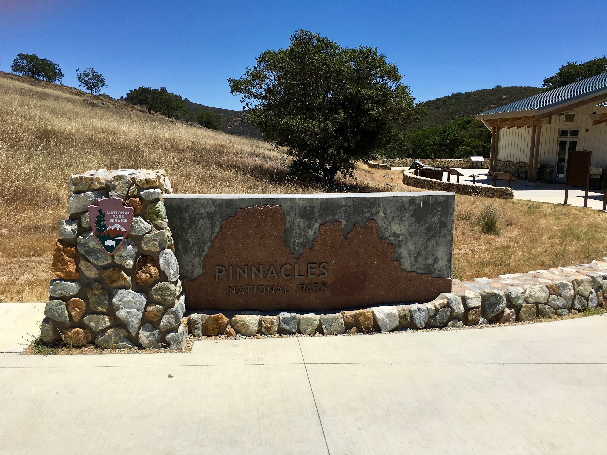
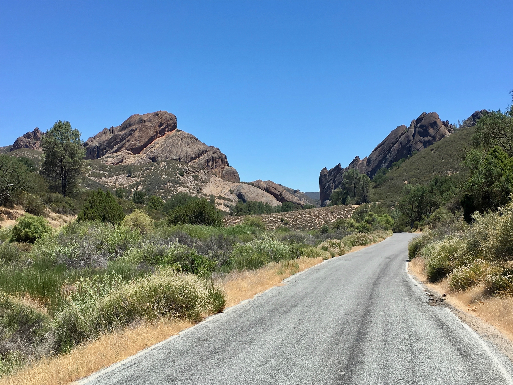
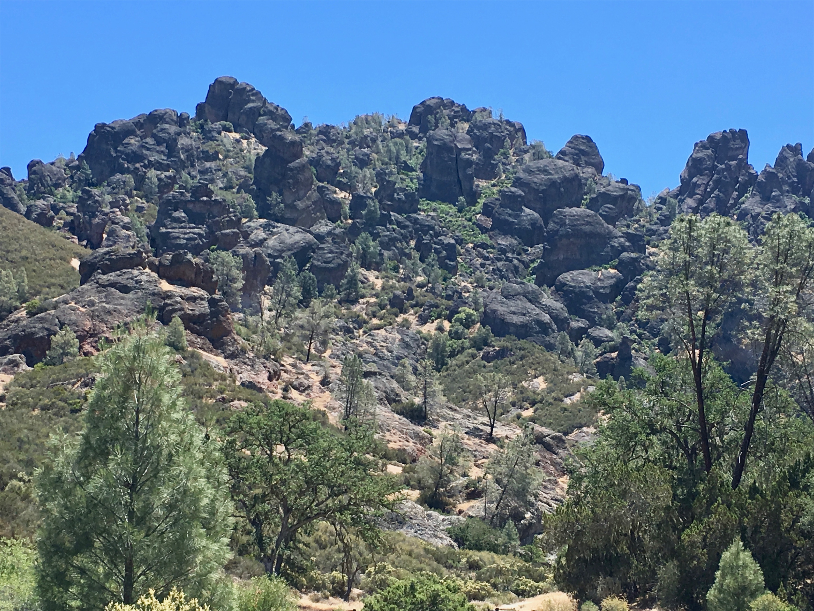
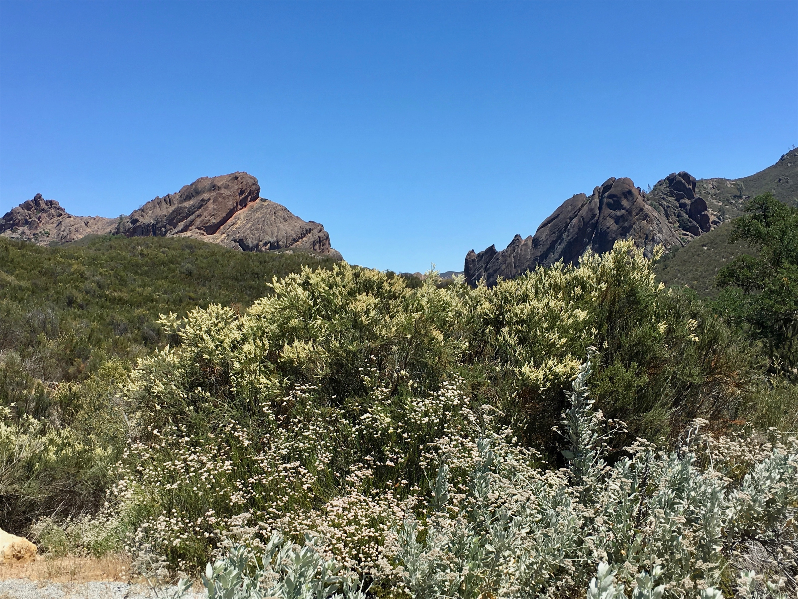
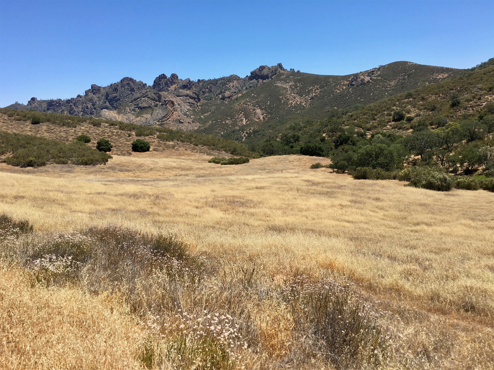

Thursday, Jun 21, 2018, 12:16 PM PDT
Pinnacles Visitor Contact Station - West Entrance, Paicines, CA, United States
64°F Sunny
64°F Sunny
![]()
6/19 Channel Islands NP Visitor Center, CA -> Santa Paula, CA 18 mi, .5 hr
6/20 Santa Paula, CA -> Pismo Beach, CA 140 mi, 4.75 hr
6/21 Pismo Beach, CA -> West Pinnacles Visitor Center, CA 123 mi, 2.25 hr
6/21 West Pinnacles Visitor Center, CA -> West Pinnacles Visitor Center, CA 5 mi, 1 hr
Trip Total: 4,303 mi
From Ventura, we headed inland a bit to our overnight stay in the little town of Santa Paula, passing through lemon orchards. We stayed in the historic Glen Tavern Inn, which has a nice Italian restaurant called Enzo’s in it. The hotel originally catered to old executives and high society (Union Oil was headquartered there), and it later became a speakeasy, a brothel, a gambling parlor (complete with shootouts and murders) and a Hollywood getaway. Notable guests included Carole Lombard, John Wayne, Houdini, and Rin Tin Tin. The next day, we went to our next overnight stay in Pismo Beach, heading north on Highway 101, with ocean on our left and golden hills on our right. The next morning, we continued on 101 north, then east to Pinnacles. The drive passed through endless scenic produce fields, vineyards, and wineries, which are part of the Monterey region.
Pinnacles is the newest national park, established in 2013. Its main feature is the remnants of a volcano that once sat on the San Andreas fault near LA, and gradually moved northeast. There is a west and an east side, and they aren’t connected by road within the park, so we had to pick one. We picked the west side, with its 1.5 lane access road, and overall it was a disappointment. The visitor’s center was closed for no apparent reason. The short drive and hike let us see some mountain features, but to really see the good stuff required a lengthy hike. This is one park where the drive to it was better than park itself. It’s not clear that we would have been any happier with the east side, give our interests.




